Experience with the GFDL model showed that the GM scheme has to be matched to the convective parameterization. This was originally expressed in connection with the introduction of the KPP boundary layer scheme (Large et al., 97) but infact, as subsequent experience with the MIT model has found, is necessary for any convective parameterization.
Deep convection sites and the mixed layer are indicated by
homogenized, unstable or nearly unstable stratification. The slopes
become in such regions are infinite, very large with a sign reversal
or simply very large. From a numerical point of view, large slopes
lead to large variations in the tensor elements (implying large bolus
flow) and can be numerically unstable. This was first reognized by
Cox, 1987, who implemented ``slopes clipping'' in the isopycnal mixing
tensor. Here, the slope magnitude is simply restricted by an upper limit:
| 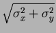 | (14) | ||
| 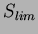 | 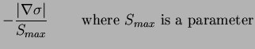 | (15) | |
| 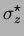 | 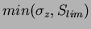 | (16) | |
| 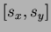 | 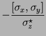 | (17) |
| 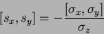 | (18) |
| 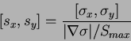 | (19) |
Even using slope clipping, it is normally the case that the vertical
diffusion term (with coefficient
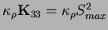) is large and must be time-stepped using an implicit
procedure (see section on discretisation and code later).
Fig.  shows the mixed layer depth resulting from
a) using the GM scheme with clipping and b) no GM scheme (horizontal
diffusion). The classic result of dramatically reducd mixed layers is
evident. Indeed, the deep convection sites to just one or two points
each and are much shallower than we might prefer.
shows the mixed layer depth resulting from
a) using the GM scheme with clipping and b) no GM scheme (horizontal
diffusion). The classic result of dramatically reducd mixed layers is
evident. Indeed, the deep convection sites to just one or two points
each and are much shallower than we might prefer.
This it turns out is due to the over zealous restratification due to the bolus transport parameterization.
Gerdes et al., 1991 ....
Danabasoglu and McWilliams, 1995 ....
Large et al., 1997 ....
Issue: should GM and Redi be tapered? cf convective paper
Issue: is adiabtic important in these regions? changes discretization
| 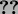 |